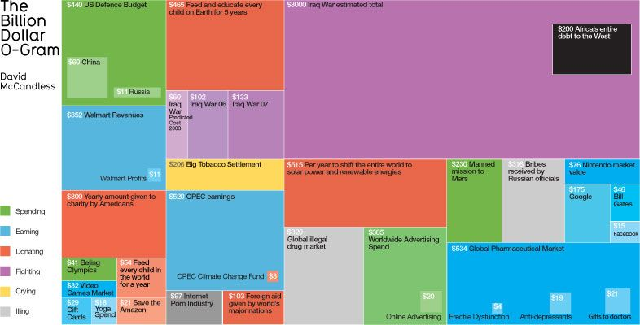
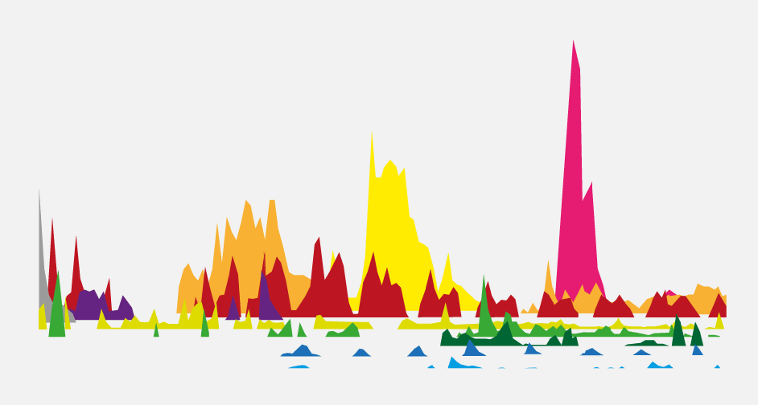

Is Information beautiful?
In a world where we are encompassed with information overload, there seems to be no easier way to visualize information than to make it more appealing to the eye. This can be achieved by designing the visualization in a manner that makes more sense by connecting the essential dots of the information that matter, while preserving the aesthetic appeal.

The billion-dollar Gram
While at face value, visualizations like the billion-dollar Gram might not make sense, a user can get more information by further looking at the Legend. But it this the best practice? maybe not. At a time when people read less text and more visuals, and where the audience is exposed to an information overflow, it is imperative to guide the eye where it is intended to go. Once the eye connects to the patterns, the user begins to extrapolate further patters. Referring to the Billion-dollar Gram for example, it will not be rocket science to quickly notice that the United States of America spends a huge amount of money in war, specifically in the Iraq war. While the biggest earners are technology and pharmaceutical companies, it is interesting to note that individual companies like Google. also tend to appear as isolated events in the chart, and not as a collective.
Landscaping visuals
These visualization can be turned into landscapes, a visualization that a reader can visualize with their own eyes. The interesting aspect of these visualizations is the connection or imitation of actual world signs and signifiers. The application of visuals as semiotic devices is evident in the popular Mountains out of Molehills visualization. This visualization about media fear and panic has data spikes around pandemics such as swine-flue, and if it were to be drawn in 2020, this will include Covid-19.
Using the Mountains out of Molehills visualization, and filtering out violent video games, one begins to see a similar pattern throughout the years. There is a clear peak in April and November. The peak in April might be triggered every year by the Columbine High School massacre of 1999. Ever since, the media has been echoing that fear over the years. In his work on the glass house effect Hirsch (2013) argue that data is the new oil. Hirsch draws from this analogy by drawing similarities between the pollutive capabilities of oil and those of Big data. Drawing from this, we can conclude that fear can be marketed by media, and thus pushing their share prices higher.
What then?
If media houses have the data, this data can be visually manipulated to frame a narrative like the claim by conspiracy theories that the effect of Covid-19 was a propaganda to further political narratives through media. Oil spills and spoil, the same way as Big data erode layers and layers of personal privacy and information. There are acts against unsafe se of oil, like the Clean water Act. Yet, the question remains whether there current acts on big data can suffice in protecting humanity as users and contributors of this data.
bibliography
Beautiful, I. is (no date) The Billion Dollar Gram Original, Information is Beautiful. Available at: https://informationisbeautiful.net/visualizations/the-billion-dollar-gram/ (Accessed: 23 October 2020).Beautiful, I. is (no date) Mountains Out of Molehills, Information is Beautiful. Available at: https://informationisbeautiful.net/visualizations/mountains-out-of-molehills/ (Accessed: 23 October 2020).
Hirsch, D.D., 2013. The glass house effect: Big Data, the new oil, and the power of analogy. Me. L. Rev., 66, p.373.